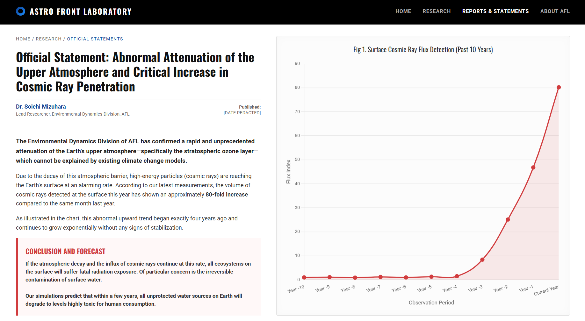

【資料保管庫】AFL公式声明アーカイブ
初代開祖が在籍していた機関による、最後の警告
以下は、初代開祖・水原宗一がかつて所属していた「アストロ・フロント・ラボラトリー（AFL）」が、数年前に発表した公式な声明文のスクリーンショット（英語原文）および、当会による日本語訳のアーカイブです。この文書は現在、公的な記録からは抹消されています。

【和訳】AFL Press Release - [DATE REDACTED]
公式声明：大気圏上層部の異常減衰および地表への宇宙線到達量に関する調査報告
当研究所（AFL）環境動態観測部門は、過去10年間にわたる人工衛星および高高度観測気球からのデータを解析した結果、地球の大気圏上層部（特にオゾン層を含む成層圏）において、既存の気候変動モデルでは説明不可能なレベルの「急激な層厚の減衰（透過率の上昇）」を確認いたしました。
この大気バリアの減衰に伴い、太陽および銀河系外から飛来する高エネルギー粒子、すなわち「宇宙線」の地表への到達量が異常なペースで増加しています。当部門の最新の測定によれば、本年度の地表における宇宙線検出量は、前年同月比で実に約80倍という極めて危険な数値に達しています。
添付の推移グラフが示す通り、この異常な上昇傾向は今からちょうど4年前を境に突如として始まりました。現在もその勢いは衰えることなく、指数関数的な増加を続けています。
【結論および予測】
このまま大気の減衰と宇宙線の増加が進行した場合、地表に存在するあらゆる生態系は致命的な被曝を免れません。特に懸念されるのが「地表水（河川、湖沼、浅層地下水）の不可逆的な汚染」です。 我々のシミュレーションでは、数年以内に地球上の未防護の水源はすべて、人類が飲用不可能なレベルへと変質する可能性が高いと予測されます。
このまま大気の減衰と宇宙線の増加が進行した場合、地表に存在するあらゆる生態系は致命的な被曝を免れません。特に懸念されるのが「地表水（河川、湖沼、浅層地下水）の不可逆的な汚染」です。 我々のシミュレーションでは、数年以内に地球上の未防護の水源はすべて、人類が飲用不可能なレベルへと変質する可能性が高いと予測されます。
当研究所は、政府および各国際機関に対し、早急なる地下シェルターの構築および、深層地下水脈の保護計画の策定を強く提言いたします。
【守護聖務部より 追記】
この絶望的な報告書が発表された後、なぜ大衆はパニックを起こさなかったのでしょうか。それは、この真実があまりに巨大すぎたため、国家権力によって即座に隠蔽されたからです。
初代開祖は、このデータを取りまとめた中心人物でありながら、社会がこれに目を背ける姿を見て深く絶望されました。そしてAFLを去り、自らの手で人類の命脈を繋ぐための「白黎泉」を見出し、天水恩寵会を設立されたのです。
この容赦のない「天からの脅威」に対し、開祖がどのような行動を起こし、そして第二代教主がどのようにして我々を生存へと導こうとされているのか。その深き真意と選別の計画については、別途記された教主の声明をご確認ください。
第二代教主の真意と「天水士選別計画」について